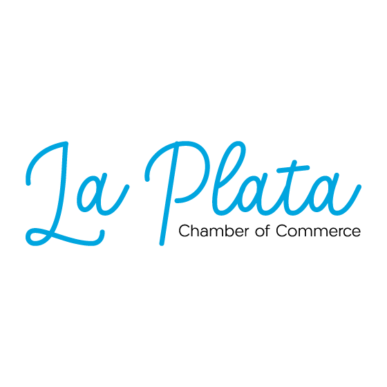
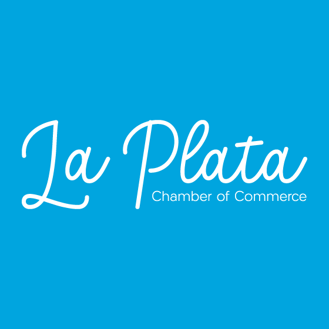

Site Purpose
The main purpose of La Plata Chamber website is to have a digital space for local professionals, businesses and entrepreneurs who work together to strengthen the business interests of the group. The intent is to foster business networking and to advocate on the behalf of the community and, for the city purposes, advertise the attractions of our lovely city, such as the gastronomical group and the educational resources.
We want our business to grow. Because of it, the site will offer the opportunity to network with one another, looking for a common interest. Networking can be done thanks to meetings online and in the real world.
This website would be used for informational purposes for the inner community, but also from the local community.
Site name and domain
The site will be called La Plata Chamber (or LPC, for short) and the domain would be laplatachamber.com. This webpage will be the first contact the members of this community will have with the organization.
Organization logo
 